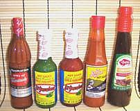

SAFARI
Users
Common Chili Sauces
There are a zillion bottled hot sauces for sale, and every hot sauce enthusiast has his favorites. The hottest often have names like "Death Sauce", "DOA", "Insanity Sauce" or similar. Here in Southern California we even have an anual Hot Sauce Expo, with at least twenty exhibitors. While I have attended that show, here I've ignored those exotic potions in favor of stuff you can buy at your local grocery at reasonable prices.How hot a hot sauce you want to use on what varies by individual and
is highly subjective, and many of you probably don't want to ask me
anyway (I drank that bottle of Tapatio straight in 4 days. Some of the
others were hit pretty hard too, and half the Pickapeppa was gone within
2 hours). All sampling and comparisons were done by licking big dollops
off the palm of my hand (well washed to assure purity).
Tapatio
® is a simple, low cost hot sauce, but clearly well liked. It's found on the tables of practically every Mexican restaurant west of the Mississippi. It was developed and marketed by a laid-off aerospace engineer, starting with a couple dozen bottles a week - it's one of the great Los Angeles success stories. Not real hot as hot sauces go (about H4), it's made from water, unspecified red chilis, salt, spices, garlic, acetic acid, xanthan gum and sodium benzoate. It goes extremely well with Tortilla Chips.Cholula
® has a more complex and sophisticated flavor than Tapatio (and it's more expensive). It appears on the tables of just about every Mexican restaurant that isn't serving Tapatio. The flavor is light and somewhat fruity compared to more earthy Mexican sauces. It's pretty mild at around H4. Made in Mexico from water, peppers (arbol and pequin), salt, vinegar, spices and xanthan gum. VK K-Pareve.Tabasco
® Green Pepper Sauce has a distinctive jalapeno chili flavor and is much milder than regular Tabasco at around H3. It's quite tasty and excellent for places you want a mild jalapeno flavored hot sauce. I've used a liberal dash each of the Tabasco Green and Tabasco Red in tomato juice to spice it up before drinking. Made in USA (Louisiana??) from vinegar, jalapeno peppers, water, salt, corn starch, xanthan gum and ascorbic acid (vitamin C). K.Tabasco
® Pepper Sauce is the traditional McIlhenny product made on Avery Island Louisiana for over a century. It's decently hot at around H6 and owes its clean flavor to aging in oak barrels. Tabasco Pepper Sauce was long ago adopted as the correct sauce for mixed drinks because of its clean sharp flavor and the fact that it contains no oil. Today many sauces have no oil, but Tabasco isn't likely to lose its status any time soon. The chilis (native to Yucatan, Mexico) are now grown mostly in Central America from Avery Island seed. Vinegar, red chilis and salt. K.Tabasco
® Habanero Sauce is the hottest of the McIlhenny products at around H7. Its habanero flavor is tempered by the traditional Tabasco flavor and it's not as hot as you might expect from something labeled "Habanero Sauce" because it's "Jamaican Style" with a lot of other flavoring ingredients. Made from vinegar, habanero peppers, cane sugar, Tabasco Pepper Sauce, salt, mango puree, dehydrated onion, banana puree, tomato paste, tamarind puree, papaya puree, spices, and Tabasco pepper mash (aged pepper, salt). K.Pickapeppa Sauce
® is a real Jamaican hot sauce made in Jamaica for over 80 years. It's much sweeter and fruitier than the Tabasco "Jamaican style" Habanero Sauce and not nearly as hot at around H4. Aged for 1 year in oak barrels, it's an honest and very tasty sauce made from tomatoes, onions, sugar, cane vinegar, mangos, raisins, tamarind, salt, chilis and spices.Frank's Red Hot Original
® Cayenne Pepper Sauce is similar in both flavor and hotness (around H5) to what you'd get by blending Tabasco Red with Tabasco Green. The label claims it's the original secret hot sauce for Buffalo Wings. It's an honest sauce made from aged cayenne red peppers, vinegar, water, salt and garlic powder. U.Goya Salsita
with habanero chilis has real habanero flavor and it's pretty hot at around H7, but the ingredient list, like those of many Goya products, seem a little contrived. Made in Mexico from water, green tomatoes, salt, habanero pepper, fresh onion, acetic acid, sugar, xanthan gum, white pepper, habanero pepper extract, sodium benzoate, garlic powder, natural habanero flavor, monsodium glutamate and turmeric. VK.Habanero Hot Sauce from Hell
® is honestly hot at around H7 and has good habanero flavor. "The World's Hottest Hot Sauce" is in quotes indicating it's someone's opinion (because it isn't - there are even some so hot they can't legally be called "sauces" - they're "food additives"). but it'll prove hot enough for most. Even I reached for a hunk of whole wheat pita bread after lapping this one up during testing. It's an honest sauce made in Arizona from water, habanero pepper, vinegar, carrots, salt, xanthan gum, garlic and spices.More Hot Sauces
Again we skip the "Death Sauces" and other pricy and exotic sauces in favor of honest products with peasant friendly prices. These are easily available in Southern California but may not be easy to find nationally.
Tamazula
® "Extra Hot" is a very fine basic Mexican hot sauce and it's made in Mexico. It's more earthy, less fruity and hotter (H5) than Cholula and has a touch of smokiness. Made from water, chili peppers, vinegar, salt, spices and 0.1% sodium benzoate.El Yucateco
® "Chile Habanero" (Red and Green) You will have no complaint with either of these lacking real habanero flavor or hotness (a solid H8) - they'll make your heart pound and your brow sweat. Hotter'n'ell and real flavor so the only thing to complain about is accidentally pouring a lot more than you intended from the relatively wide mouthed bottles. Simple, straight forward habanero sauces, these are definitely Not "Jamaican style" and contain no fruits other than habanero peppers. Made in Mexico from (Red) red habanero peppers, water, tomato, salt, spices, acetic acid F.D.&C red 40 and 0.1% sodium benzoate. (Green) green habanero peppers, water, salt, garlic, spices, acetic acid, F.D.&C yellow 5, F.D.&C blue 1 and 0.1% sodium benzoate. VK.Salsa Huichol
® - a sound and simple Mexican hot sauce made from natural ingredients grown in the Huichol highlands of Mexico (home of famed Huichol shaman Don Jose Matsua). It's thicker and more earthy than Cholula but about the same hotness (H4). Made in Mexico from chilipeppers, spices, salt and vinegar.Buffalo
® "Chipotle" - A very flavorful dark sauce made from chipotle chilis (jalapenos red ripe, dried and smoked), it's somewhat sweet, smoky and reasonably hot at about H6. Made in Mexico from water, distilled vinegar, chilis peppers, salt, sugar, caramel color, spices and 0.1% sodium benzoate. Buffalo claims to be "Mexico's #1 hot sauce for 60 years" and makes several other fine chili sauces.Asian Chili Sauces
Huy Fong Chili Sauces
We might as well start with the ubiquitous Huy Fong products made here in Los Angeles. Not authentic? Well, David Tran, the founder of the company, now building a worldwide market which includes Southeast Asia, was a Vietnamese refugee after the war. He re-established the family busniness here, selling first to our huge Asian population. The only "unauthentic" part is that the Huy Fong sauces are made from red ripe Jalapeno peppers, because that's what David Tran likes.
Jalapenos didn't grow in Asia until these sauces came out, but you
can bet they're being grown there now (Serranos are already big in
Thailand due to influence from our Thai restaurants). Huy Fong is one
of the great Los Angeles success stories, along with Tapatio hot sauce
(see above). The three sauces are Sriracha Hot Chili Sauce,
Chili Garlic Sauce and Sambal Oelek. You will find more
details on our
Huy Fong Chili Sauces page.
Fried Chili Paste
[Roasted Chili Paste]
This paste is popular in parts of Thailand, used in soups and salads.
It has a definite roasted flavor, and is very hot. Plain dry roasted and
ground chili flake is also used in parts of Thailand. The photo specimen
was purchased from a large Asian market in Los Angeles for 2017 US $4.99
for a 10.6 ounce (300 gm) jar. Ing: chili, garlic, red-onion (probably
shallots), palm oil - product of Thailand.
Chili Broad Bean Paste
[Sichuan Pixian Doubanjiang]
In Sichuan, Broad Beans (Fava Beans) are used for sauces instead of
Soy Beans. This fermented sauce is very important to the cuisines of
Sichuan and Hunan in southern China. The best are reputed to come from
the town of Pixian. Details and
Cooking.
Gochujang Chili Paste
This is the chili sauce of Korea, one of the three essential ingredients
in Korean cuisine (the other two are fermented bean paste and soy sauce).
This is a fermented paste traditionally made from chilis, rice flour and
soybeans. Today it may be made with wheat flour and grains in place of
the rice flour, and most don't include soybeans. Processes and
ingredients vary, resulting in prices at a local Korean market ranging
from 2013 US $3.99 to $7.99 for a 1.1 pound tub. The photo specimen,
made in Korea, is made from chili powder, rice, corn syrup, starch syrup,
salt, alcohol, fructooligosaccharide. Another I have on hand is made
from wheat flour, wheat grains, chili powder, salt, malt syrup, water.
Details and Cooking.
Other Sauces & Chili Products
Turkish Hot Pepper Sauce
This is a moderately hot (H3) chunky paste made from hot red chilis and tomatoes. Judging from the shopping cart loads going out the door when my local market had a sale on Tukas brand (made in Turkey) I'd say it's wildly popular in the Anatolia and Caucasus region. particularly in Armenia. Anyway, it's a lot healthier than catsup (no sugar).
Ingredients: Hot red peppers, tomato paste, salt, citric acid, sodium
benzoate, ascorbic acid.
Paprika Paste
Imported from Hungary this paste, available in both mild and hot versions, is very tasty for use on sandwiches and the like. Red Bell Peppers and Paprika Peppers, Salt, Modified Starch, Xanthan Gum, Citric Acid, Potassium Sorbate.